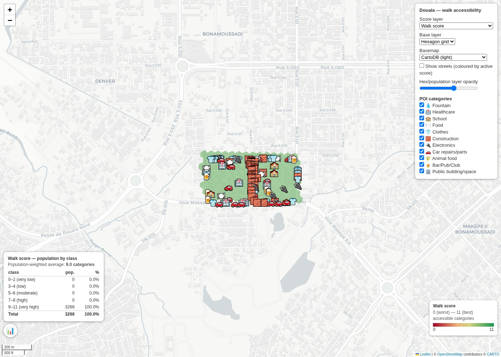
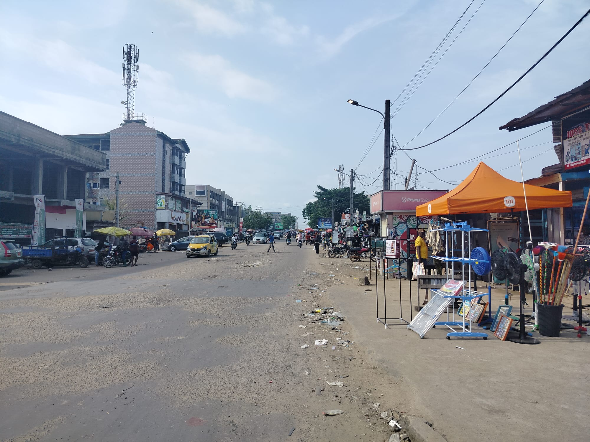

Road quality drives
One classified map per recorded drive between Douala and Fotouni. Pick a drive from the dropdown.

Addressing pipeline
Geocoded street/house-number maps for Bandja and Douala. Pick a town from the dropdown.

Proximity and walk score
Walk score and per-category accessibility maps for Bonamoussadi (Douala) and Fotouni. Pick a site from the dropdown.

Building survey maps
Every surveyed building, with RTK/GPS precision circles, photos, and reverse-geocoded address. Pick a site from the dropdown.